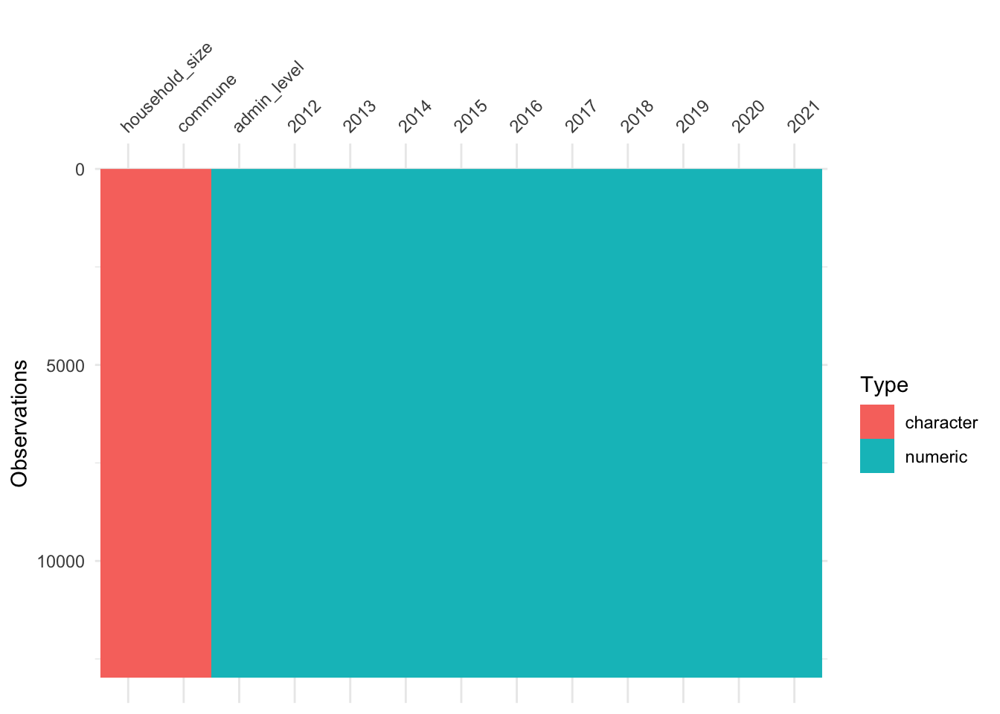
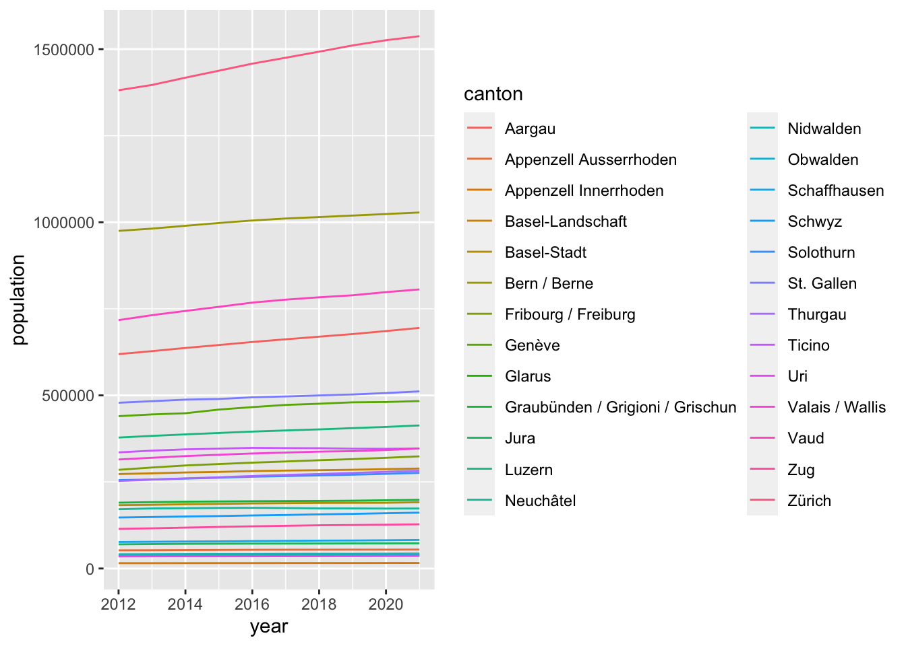
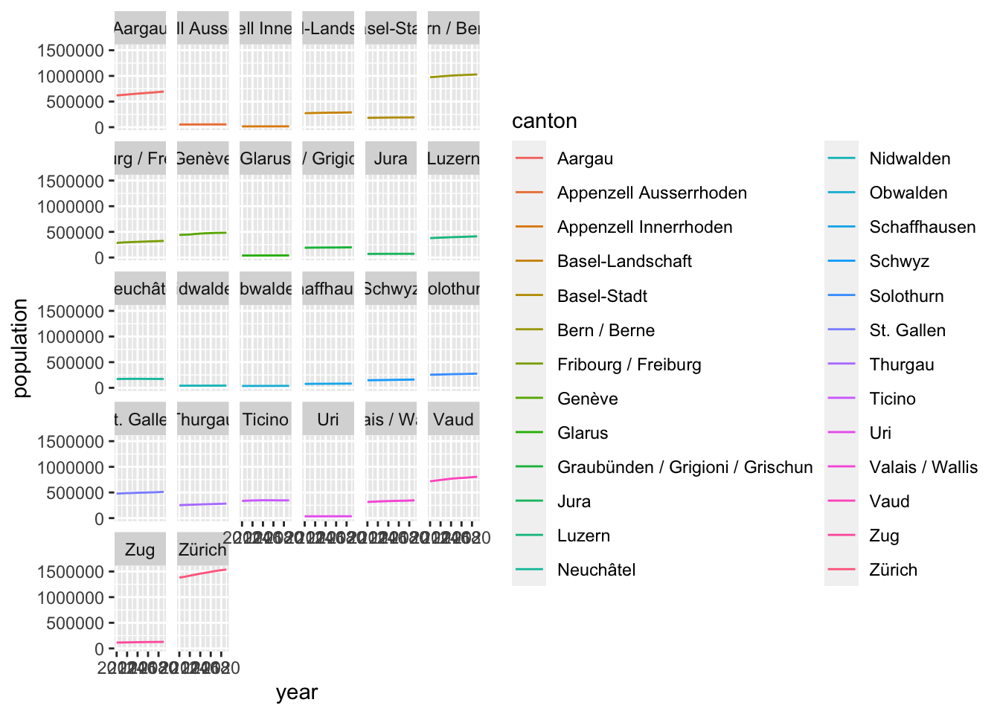

<!DOCTYPE html>
<html xmlns="http://www.w3.org/1999/xhtml" lang="en" xml:lang="en"><head>

<meta charset="utf-8">
<meta name="generator" content="quarto-1.1.251">

<meta name="viewport" content="width=device-width, initial-scale=1.0, user-scalable=yes">


<title>Exercises</title>
<style>
code{white-space: pre-wrap;}
span.smallcaps{font-variant: small-caps;}
div.columns{display: flex; gap: min(4vw, 1.5em);}
div.column{flex: auto; overflow-x: auto;}
div.hanging-indent{margin-left: 1.5em; text-indent: -1.5em;}
ul.task-list{list-style: none;}
ul.task-list li input[type="checkbox"] {
  width: 0.8em;
  margin: 0 0.8em 0.2em -1.6em;
  vertical-align: middle;
}
pre > code.sourceCode { white-space: pre; position: relative; }
pre > code.sourceCode > span { display: inline-block; line-height: 1.25; }
pre > code.sourceCode > span:empty { height: 1.2em; }
.sourceCode { overflow: visible; }
code.sourceCode > span { color: inherit; text-decoration: inherit; }
div.sourceCode { margin: 1em 0; }
pre.sourceCode { margin: 0; }
@media screen {
div.sourceCode { overflow: auto; }
}
@media print {
pre > code.sourceCode { white-space: pre-wrap; }
pre > code.sourceCode > span { text-indent: -5em; padding-left: 5em; }
}
pre.numberSource code
  { counter-reset: source-line 0; }
pre.numberSource code > span
  { position: relative; left: -4em; counter-increment: source-line; }
pre.numberSource code > span > a:first-child::before
  { content: counter(source-line);
    position: relative; left: -1em; text-align: right; vertical-align: baseline;
    border: none; display: inline-block;
    -webkit-touch-callout: none; -webkit-user-select: none;
    -khtml-user-select: none; -moz-user-select: none;
    -ms-user-select: none; user-select: none;
    padding: 0 4px; width: 4em;
    color: #aaaaaa;
  }
pre.numberSource { margin-left: 3em; border-left: 1px solid #aaaaaa;  padding-left: 4px; }
div.sourceCode
  {   }
@media screen {
pre > code.sourceCode > span > a:first-child::before { text-decoration: underline; }
}
code span.al { color: #ff0000; font-weight: bold; } /* Alert */
code span.an { color: #60a0b0; font-weight: bold; font-style: italic; } /* Annotation */
code span.at { color: #7d9029; } /* Attribute */
code span.bn { color: #40a070; } /* BaseN */
code span.bu { color: #008000; } /* BuiltIn */
code span.cf { color: #007020; font-weight: bold; } /* ControlFlow */
code span.ch { color: #4070a0; } /* Char */
code span.cn { color: #880000; } /* Constant */
code span.co { color: #60a0b0; font-style: italic; } /* Comment */
code span.cv { color: #60a0b0; font-weight: bold; font-style: italic; } /* CommentVar */
code span.do { color: #ba2121; font-style: italic; } /* Documentation */
code span.dt { color: #902000; } /* DataType */
code span.dv { color: #40a070; } /* DecVal */
code span.er { color: #ff0000; font-weight: bold; } /* Error */
code span.ex { } /* Extension */
code span.fl { color: #40a070; } /* Float */
code span.fu { color: #06287e; } /* Function */
code span.im { color: #008000; font-weight: bold; } /* Import */
code span.in { color: #60a0b0; font-weight: bold; font-style: italic; } /* Information */
code span.kw { color: #007020; font-weight: bold; } /* Keyword */
code span.op { color: #666666; } /* Operator */
code span.ot { color: #007020; } /* Other */
code span.pp { color: #bc7a00; } /* Preprocessor */
code span.sc { color: #4070a0; } /* SpecialChar */
code span.ss { color: #bb6688; } /* SpecialString */
code span.st { color: #4070a0; } /* String */
code span.va { color: #19177c; } /* Variable */
code span.vs { color: #4070a0; } /* VerbatimString */
code span.wa { color: #60a0b0; font-weight: bold; font-style: italic; } /* Warning */
</style>


<script src="exercises_files/libs/clipboard/clipboard.min.js"></script>
<script src="exercises_files/libs/quarto-html/quarto.js"></script>
<script src="exercises_files/libs/quarto-html/popper.min.js"></script>
<script src="exercises_files/libs/quarto-html/tippy.umd.min.js"></script>
<script src="exercises_files/libs/quarto-html/anchor.min.js"></script>
<link href="exercises_files/libs/quarto-html/tippy.css" rel="stylesheet">
<link href="exercises_files/libs/quarto-html/quarto-syntax-highlighting.css" rel="stylesheet" id="quarto-text-highlighting-styles">
<script src="exercises_files/libs/bootstrap/bootstrap.min.js"></script>
<link href="exercises_files/libs/bootstrap/bootstrap-icons.css" rel="stylesheet">
<link href="exercises_files/libs/bootstrap/bootstrap.min.css" rel="stylesheet" id="quarto-bootstrap" data-mode="light">


</head>

<body class="fullcontent">

<div id="quarto-content" class="page-columns page-rows-contents page-layout-article">

<main class="content" id="quarto-document-content">

<header id="title-block-header" class="quarto-title-block default">
<div class="quarto-title">
<h1 class="title">Exercises</h1>
</div>


<div class="quarto-title-meta">

    
    
  </div>
  

</header>

<section id="import-the-libraries" class="level2">
<h2 class="anchored" data-anchor-id="import-the-libraries">Import the libraries</h2>
<div class="cell">
<div class="sourceCode cell-code" id="cb1"><pre class="sourceCode r code-with-copy"><code class="sourceCode r"><span id="cb1-1"><a href="#cb1-1" aria-hidden="true" tabindex="-1"></a><span class="fu">library</span>(tidyverse)</span></code><button title="Copy to Clipboard" class="code-copy-button"><i class="bi"></i></button></pre></div>
<div class="cell-output cell-output-stderr">
<pre><code>── Attaching packages ─────────────────────────────────────── tidyverse 1.3.1 ──</code></pre>
</div>
<div class="cell-output cell-output-stderr">
<pre><code>✔ ggplot2 3.4.0      ✔ purrr   0.3.4 
✔ tibble  3.1.8      ✔ dplyr   1.0.10
✔ tidyr   1.2.1      ✔ stringr 1.4.0 
✔ readr   2.0.2      ✔ forcats 0.5.1 </code></pre>
</div>
<div class="cell-output cell-output-stderr">
<pre><code>── Conflicts ────────────────────────────────────────── tidyverse_conflicts() ──
✖ dplyr::filter() masks stats::filter()
✖ dplyr::lag()    masks stats::lag()</code></pre>
</div>
</div>
<div class="callout-note callout callout-style-default callout-captioned">
<div class="callout-header d-flex align-content-center">
<div class="callout-icon-container">
<i class="callout-icon"></i>
</div>
<div class="callout-caption-container flex-fill">
Note
</div>
</div>
<div class="callout-body-container callout-body">
<p>Note that there are five types of callouts, including: <code>note</code>, <code>warning</code>, <code>important</code>, <code>tip</code>, and <code>caution</code>.</p>
</div>
</div>
</section>
<section id="load-the-data" class="level2">
<h2 class="anchored" data-anchor-id="load-the-data">Load the data</h2>
<div class="cell">
<div class="sourceCode cell-code" id="cb5"><pre class="sourceCode r code-with-copy"><code class="sourceCode r"><span id="cb5-1"><a href="#cb5-1" aria-hidden="true" tabindex="-1"></a>communes_population <span class="ot">&lt;-</span> <span class="fu">read_csv</span>(<span class="st">"communes_population.csv"</span>)</span></code><button title="Copy to Clipboard" class="code-copy-button"><i class="bi"></i></button></pre></div>
<div class="cell-output cell-output-stderr">
<pre><code>Rows: 12978 Columns: 13
── Column specification ────────────────────────────────────────────────────────
Delimiter: ","
chr  (2): household_size, commune
dbl (11): admin_level, 2012, 2013, 2014, 2015, 2016, 2017, 2018, 2019, 2020,...

ℹ Use `spec()` to retrieve the full column specification for this data.
ℹ Specify the column types or set `show_col_types = FALSE` to quiet this message.</code></pre>
</div>
<div class="sourceCode cell-code" id="cb7"><pre class="sourceCode r code-with-copy"><code class="sourceCode r"><span id="cb7-1"><a href="#cb7-1" aria-hidden="true" tabindex="-1"></a>communes_ids <span class="ot">&lt;-</span> <span class="fu">read_csv</span>(<span class="st">"communes_ids.csv"</span>) <span class="co"># put it in excel</span></span></code><button title="Copy to Clipboard" class="code-copy-button"><i class="bi"></i></button></pre></div>
<div class="cell-output cell-output-stderr">
<pre><code>Rows: 2163 Columns: 2
── Column specification ────────────────────────────────────────────────────────
Delimiter: ","
chr (2): district, commune

ℹ Use `spec()` to retrieve the full column specification for this data.
ℹ Specify the column types or set `show_col_types = FALSE` to quiet this message.</code></pre>
</div>
<div class="sourceCode cell-code" id="cb9"><pre class="sourceCode r code-with-copy"><code class="sourceCode r"><span id="cb9-1"><a href="#cb9-1" aria-hidden="true" tabindex="-1"></a>district_ids <span class="ot">&lt;-</span> <span class="fu">read_csv</span>(<span class="st">"district_ids.csv"</span>)</span></code><button title="Copy to Clipboard" class="code-copy-button"><i class="bi"></i></button></pre></div>
<div class="cell-output cell-output-stderr">
<pre><code>Rows: 143 Columns: 2
── Column specification ────────────────────────────────────────────────────────
Delimiter: ","
chr (2): canton, district

ℹ Use `spec()` to retrieve the full column specification for this data.
ℹ Specify the column types or set `show_col_types = FALSE` to quiet this message.</code></pre>
</div>
</div>
</section>
<section id="explore-the-data" class="level2">
<h2 class="anchored" data-anchor-id="explore-the-data">Explore the data</h2>
<div class="cell">
<div class="sourceCode cell-code" id="cb11"><pre class="sourceCode r code-with-copy"><code class="sourceCode r"><span id="cb11-1"><a href="#cb11-1" aria-hidden="true" tabindex="-1"></a><span class="fu">head</span>(communes_population)</span></code><button title="Copy to Clipboard" class="code-copy-button"><i class="bi"></i></button></pre></div>
<div class="cell-output cell-output-stdout">
<pre><code># A tibble: 6 × 13
  household_s…¹ commune admin…² `2012` `2013` `2014` `2015` `2016` `2017` `2018`
  &lt;chr&gt;         &lt;chr&gt;     &lt;dbl&gt;  &lt;dbl&gt;  &lt;dbl&gt;  &lt;dbl&gt;  &lt;dbl&gt;  &lt;dbl&gt;  &lt;dbl&gt;  &lt;dbl&gt;
1 1 Person      0001 A…       3    219    225    222    237    235    233    245
2 2 Personen    0001 A…       3    544    554    546    534    548    566    594
3 3 Personen    0001 A…       3    372    342    336    336    348    351    327
4 4 Personen    0001 A…       3    484    520    508    520    544    516    532
5 5 Personen    0001 A…       3    235    230    250    240    190    170    195
6 6 oder mehr … 0001 A…       3     95     87     83    103    104     95     79
# … with 3 more variables: `2019` &lt;dbl&gt;, `2020` &lt;dbl&gt;, `2021` &lt;dbl&gt;, and
#   abbreviated variable names ¹​household_size, ²​admin_level</code></pre>
</div>
</div>
<div class="cell">
<div class="sourceCode cell-code" id="cb13"><pre class="sourceCode r code-with-copy"><code class="sourceCode r"><span id="cb13-1"><a href="#cb13-1" aria-hidden="true" tabindex="-1"></a>visdat<span class="sc">::</span><span class="fu">vis_dat</span>(communes_population)</span></code><button title="Copy to Clipboard" class="code-copy-button"><i class="bi"></i></button></pre></div>
<div class="cell-output cell-output-stderr">
<pre><code>Warning: `gather_()` was deprecated in tidyr 1.2.0.
ℹ Please use `gather()` instead.
ℹ The deprecated feature was likely used in the visdat package.
  Please report the issue at &lt;]8;;https://github.com/ropensci/visdat/issueshttps://github.com/ropensci/visdat/issues]8;;&gt;.</code></pre>
</div>
<div class="cell-output-display">
<p></p>
</div>
</div>
</section>
<section id="how-many-inhabitant-had-the-commune-of-1123-altishofen-living-in-a-4-people-household-in-2022" class="level2">
<h2 class="anchored" data-anchor-id="how-many-inhabitant-had-the-commune-of-1123-altishofen-living-in-a-4-people-household-in-2022">How many inhabitant had the commune of “1123 Altishofen” living in a 4 people household, in 2022?</h2>
<div class="cell">
<div class="sourceCode cell-code" id="cb15"><pre class="sourceCode r code-with-copy"><code class="sourceCode r"><span id="cb15-1"><a href="#cb15-1" aria-hidden="true" tabindex="-1"></a>communes_population <span class="sc">%&gt;%</span> </span>
<span id="cb15-2"><a href="#cb15-2" aria-hidden="true" tabindex="-1"></a>  <span class="fu">filter</span>(commune <span class="sc">==</span> <span class="st">"1123 Altishofen"</span>, household_size <span class="sc">==</span> <span class="st">"4 Personen"</span>) <span class="sc">%&gt;%</span> </span>
<span id="cb15-3"><a href="#cb15-3" aria-hidden="true" tabindex="-1"></a>  <span class="fu">select</span>(<span class="st">`</span><span class="at">2013</span><span class="st">`</span>) <span class="co"># maybe call the columns are "year"</span></span></code><button title="Copy to Clipboard" class="code-copy-button"><i class="bi"></i></button></pre></div>
<div class="cell-output cell-output-stdout">
<pre><code># A tibble: 1 × 1
  `2013`
   &lt;dbl&gt;
1    548</code></pre>
</div>
</div>
</section>
<section id="how-many-communes-are-there-listed" class="level2">
<h2 class="anchored" data-anchor-id="how-many-communes-are-there-listed">How many communes are there listed</h2>
<p>Do they use distinct?</p>
<div class="cell">
<div class="sourceCode cell-code" id="cb17"><pre class="sourceCode r code-with-copy"><code class="sourceCode r"><span id="cb17-1"><a href="#cb17-1" aria-hidden="true" tabindex="-1"></a>communes_population <span class="sc">%&gt;%</span> </span>
<span id="cb17-2"><a href="#cb17-2" aria-hidden="true" tabindex="-1"></a>  <span class="fu">distinct</span>(commune) <span class="sc">%&gt;%</span> </span>
<span id="cb17-3"><a href="#cb17-3" aria-hidden="true" tabindex="-1"></a>  <span class="fu">nrow</span>()</span></code><button title="Copy to Clipboard" class="code-copy-button"><i class="bi"></i></button></pre></div>
<div class="cell-output cell-output-stdout">
<pre><code>[1] 2163</code></pre>
</div>
</div>
</section>
<section id="summarise-the-data-by-district-for-the-year-2021" class="level2">
<h2 class="anchored" data-anchor-id="summarise-the-data-by-district-for-the-year-2021">Summarise the data by district, for the year 2021</h2>
<div class="cell">
<div class="sourceCode cell-code" id="cb19"><pre class="sourceCode r code-with-copy"><code class="sourceCode r"><span id="cb19-1"><a href="#cb19-1" aria-hidden="true" tabindex="-1"></a>communes_population <span class="sc">%&gt;%</span> </span>
<span id="cb19-2"><a href="#cb19-2" aria-hidden="true" tabindex="-1"></a>  <span class="fu">left_join</span>(communes_ids, <span class="st">"commune"</span>) <span class="sc">%&gt;%</span> </span>
<span id="cb19-3"><a href="#cb19-3" aria-hidden="true" tabindex="-1"></a>  dplyr<span class="sc">::</span><span class="fu">group_by</span>(district) <span class="sc">%&gt;%</span> </span>
<span id="cb19-4"><a href="#cb19-4" aria-hidden="true" tabindex="-1"></a>  dplyr<span class="sc">::</span><span class="fu">summarise</span>(<span class="at">population =</span> <span class="fu">sum</span>(<span class="st">`</span><span class="at">2021</span><span class="st">`</span>))</span></code><button title="Copy to Clipboard" class="code-copy-button"><i class="bi"></i></button></pre></div>
<div class="cell-output cell-output-stdout">
<pre><code># A tibble: 143 × 2
   district                                  population
   &lt;chr&gt;                                          &lt;dbl&gt;
 1 Arrondissement administratif Jura bernois      52836
 2 Bezirk Aarau                                   79983
 3 Bezirk Affoltern                               55944
 4 Bezirk Andelfingen                             31801
 5 Bezirk Arbon                                   58215
 6 Bezirk Arlesheim                              155338
 7 Bezirk Baden                                  145728
 8 Bezirk Bremgarten                              79452
 9 Bezirk Brig                                    27256
10 Bezirk Brugg                                   52171
# … with 133 more rows</code></pre>
</div>
</div>
</section>
<section id="summarise-the-data-by-district-and-by-year" class="level2">
<h2 class="anchored" data-anchor-id="summarise-the-data-by-district-and-by-year">Summarise the data by district and by year</h2>
<p>tip: pivot the data first</p>
<div class="cell">
<div class="sourceCode cell-code" id="cb21"><pre class="sourceCode r code-with-copy"><code class="sourceCode r"><span id="cb21-1"><a href="#cb21-1" aria-hidden="true" tabindex="-1"></a>communes_long <span class="ot">&lt;-</span> communes_population <span class="sc">%&gt;%</span> </span>
<span id="cb21-2"><a href="#cb21-2" aria-hidden="true" tabindex="-1"></a>  <span class="fu">pivot_longer</span>(<span class="at">cols =</span> <span class="st">`</span><span class="at">2012</span><span class="st">`</span><span class="sc">:</span><span class="st">`</span><span class="at">2021</span><span class="st">`</span>,<span class="at">names_to =</span> <span class="st">"year"</span>, <span class="at">values_to =</span> <span class="st">"population"</span>) <span class="sc">%&gt;%</span> </span>
<span id="cb21-3"><a href="#cb21-3" aria-hidden="true" tabindex="-1"></a>  <span class="fu">left_join</span>(communes_ids, <span class="st">"commune"</span>)</span>
<span id="cb21-4"><a href="#cb21-4" aria-hidden="true" tabindex="-1"></a>  </span>
<span id="cb21-5"><a href="#cb21-5" aria-hidden="true" tabindex="-1"></a></span>
<span id="cb21-6"><a href="#cb21-6" aria-hidden="true" tabindex="-1"></a>district_long <span class="ot">&lt;-</span> communes_long <span class="sc">%&gt;%</span> </span>
<span id="cb21-7"><a href="#cb21-7" aria-hidden="true" tabindex="-1"></a>  dplyr<span class="sc">::</span><span class="fu">group_by</span>(district, year) <span class="sc">%&gt;%</span> </span>
<span id="cb21-8"><a href="#cb21-8" aria-hidden="true" tabindex="-1"></a>  dplyr<span class="sc">::</span><span class="fu">summarise</span>(<span class="at">population =</span> <span class="fu">sum</span>(population))</span></code><button title="Copy to Clipboard" class="code-copy-button"><i class="bi"></i></button></pre></div>
<div class="cell-output cell-output-stderr">
<pre><code>`summarise()` has grouped output by 'district'. You can override using the
`.groups` argument.</code></pre>
</div>
</div>
</section>
<section id="do-the-same-by-canton" class="level2">
<h2 class="anchored" data-anchor-id="do-the-same-by-canton">Do the same, by canton</h2>
<div class="cell">
<div class="sourceCode cell-code" id="cb23"><pre class="sourceCode r code-with-copy"><code class="sourceCode r"><span id="cb23-1"><a href="#cb23-1" aria-hidden="true" tabindex="-1"></a>communes_long <span class="ot">&lt;-</span>  communes_long <span class="sc">%&gt;%</span> </span>
<span id="cb23-2"><a href="#cb23-2" aria-hidden="true" tabindex="-1"></a>  <span class="fu">left_join</span>(district_ids, <span class="st">"district"</span>)</span>
<span id="cb23-3"><a href="#cb23-3" aria-hidden="true" tabindex="-1"></a></span>
<span id="cb23-4"><a href="#cb23-4" aria-hidden="true" tabindex="-1"></a>canton_long <span class="ot">&lt;-</span> communes_long <span class="sc">%&gt;%</span> </span>
<span id="cb23-5"><a href="#cb23-5" aria-hidden="true" tabindex="-1"></a>  dplyr<span class="sc">::</span><span class="fu">group_by</span>(canton, year) <span class="sc">%&gt;%</span> </span>
<span id="cb23-6"><a href="#cb23-6" aria-hidden="true" tabindex="-1"></a>  dplyr<span class="sc">::</span><span class="fu">summarise</span>(<span class="at">population =</span> <span class="fu">sum</span>(population))</span></code><button title="Copy to Clipboard" class="code-copy-button"><i class="bi"></i></button></pre></div>
<div class="cell-output cell-output-stderr">
<pre><code>`summarise()` has grouped output by 'canton'. You can override using the
`.groups` argument.</code></pre>
</div>
</div>
</section>
<section id="make-one-plot-per-canton-to-show-the-evolution-by-year" class="level2">
<h2 class="anchored" data-anchor-id="make-one-plot-per-canton-to-show-the-evolution-by-year">Make one plot per canton, to show the evolution by year</h2>
<p>tip: transform the year to a numeric column first</p>
<div class="cell">
<div class="sourceCode cell-code" id="cb25"><pre class="sourceCode r code-with-copy"><code class="sourceCode r"><span id="cb25-1"><a href="#cb25-1" aria-hidden="true" tabindex="-1"></a>canton_long <span class="ot">&lt;-</span> canton_long <span class="sc">%&gt;%</span> </span>
<span id="cb25-2"><a href="#cb25-2" aria-hidden="true" tabindex="-1"></a>  <span class="fu">mutate</span>(<span class="at">year =</span> <span class="fu">as.numeric</span>(year))</span>
<span id="cb25-3"><a href="#cb25-3" aria-hidden="true" tabindex="-1"></a></span>
<span id="cb25-4"><a href="#cb25-4" aria-hidden="true" tabindex="-1"></a>canton_long <span class="sc">%&gt;%</span> </span>
<span id="cb25-5"><a href="#cb25-5" aria-hidden="true" tabindex="-1"></a>  <span class="fu">ggplot</span>(<span class="fu">aes</span>(<span class="at">x =</span> year, <span class="at">y =</span> population, <span class="at">color =</span> canton)) <span class="sc">+</span></span>
<span id="cb25-6"><a href="#cb25-6" aria-hidden="true" tabindex="-1"></a>  <span class="fu">geom_line</span>() </span></code><button title="Copy to Clipboard" class="code-copy-button"><i class="bi"></i></button></pre></div>
<div class="cell-output-display">
<p></p>
</div>
</div>
<div class="cell">
<div class="sourceCode cell-code" id="cb26"><pre class="sourceCode r code-with-copy"><code class="sourceCode r"><span id="cb26-1"><a href="#cb26-1" aria-hidden="true" tabindex="-1"></a>canton_long <span class="sc">%&gt;%</span> </span>
<span id="cb26-2"><a href="#cb26-2" aria-hidden="true" tabindex="-1"></a>  <span class="fu">ggplot</span>(<span class="fu">aes</span>(<span class="at">x =</span> year, <span class="at">y =</span> population, <span class="at">color =</span> canton)) <span class="sc">+</span></span>
<span id="cb26-3"><a href="#cb26-3" aria-hidden="true" tabindex="-1"></a>  <span class="fu">geom_line</span>() <span class="sc">+</span></span>
<span id="cb26-4"><a href="#cb26-4" aria-hidden="true" tabindex="-1"></a>  <span class="fu">facet_wrap</span>(<span class="fu">vars</span>(canton))</span></code><button title="Copy to Clipboard" class="code-copy-button"><i class="bi"></i></button></pre></div>
<div class="cell-output-display">
<p></p>
</div>
</div>
</section>
<section id="barplot" class="level2">
<h2 class="anchored" data-anchor-id="barplot">barplot</h2>
</section>
<section id="export" class="level2">
<h2 class="anchored" data-anchor-id="export">export</h2>
</section>

</main>
<!-- /main column -->
<script id="quarto-html-after-body" type="application/javascript">
window.document.addEventListener("DOMContentLoaded", function (event) {
  const toggleBodyColorMode = (bsSheetEl) => {
    const mode = bsSheetEl.getAttribute("data-mode");
    const bodyEl = window.document.querySelector("body");
    if (mode === "dark") {
      bodyEl.classList.add("quarto-dark");
      bodyEl.classList.remove("quarto-light");
    } else {
      bodyEl.classList.add("quarto-light");
      bodyEl.classList.remove("quarto-dark");
    }
  }
  const toggleBodyColorPrimary = () => {
    const bsSheetEl = window.document.querySelector("link#quarto-bootstrap");
    if (bsSheetEl) {
      toggleBodyColorMode(bsSheetEl);
    }
  }
  toggleBodyColorPrimary();  
  const icon = "";
  const anchorJS = new window.AnchorJS();
  anchorJS.options = {
    placement: 'right',
    icon: icon
  };
  anchorJS.add('.anchored');
  const clipboard = new window.ClipboardJS('.code-copy-button', {
    target: function(trigger) {
      return trigger.previousElementSibling;
    }
  });
  clipboard.on('success', function(e) {
    // button target
    const button = e.trigger;
    // don't keep focus
    button.blur();
    // flash "checked"
    button.classList.add('code-copy-button-checked');
    var currentTitle = button.getAttribute("title");
    button.setAttribute("title", "Copied!");
    setTimeout(function() {
      button.setAttribute("title", currentTitle);
      button.classList.remove('code-copy-button-checked');
    }, 1000);
    // clear code selection
    e.clearSelection();
  });
  function tippyHover(el, contentFn) {
    const config = {
      allowHTML: true,
      content: contentFn,
      maxWidth: 500,
      delay: 100,
      arrow: false,
      appendTo: function(el) {
          return el.parentElement;
      },
      interactive: true,
      interactiveBorder: 10,
      theme: 'quarto',
      placement: 'bottom-start'
    };
    window.tippy(el, config); 
  }
  const noterefs = window.document.querySelectorAll('a[role="doc-noteref"]');
  for (var i=0; i<noterefs.length; i++) {
    const ref = noterefs[i];
    tippyHover(ref, function() {
      // use id or data attribute instead here
      let href = ref.getAttribute('data-footnote-href') || ref.getAttribute('href');
      try { href = new URL(href).hash; } catch {}
      const id = href.replace(/^#\/?/, "");
      const note = window.document.getElementById(id);
      return note.innerHTML;
    });
  }
  var bibliorefs = window.document.querySelectorAll('a[role="doc-biblioref"]');
  for (var i=0; i<bibliorefs.length; i++) {
    const ref = bibliorefs[i];
    const cites = ref.parentNode.getAttribute('data-cites').split(' ');
    tippyHover(ref, function() {
      var popup = window.document.createElement('div');
      cites.forEach(function(cite) {
        var citeDiv = window.document.createElement('div');
        citeDiv.classList.add('hanging-indent');
        citeDiv.classList.add('csl-entry');
        var biblioDiv = window.document.getElementById('ref-' + cite);
        if (biblioDiv) {
          citeDiv.innerHTML = biblioDiv.innerHTML;
        }
        popup.appendChild(citeDiv);
      });
      return popup.innerHTML;
    });
  }
});
</script>
</div> <!-- /content -->


</body></html>